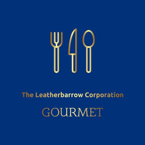

Trade Mark Journal No.2026/010 6 March 2026
UK00004342086 17 February 2026 (35,42,43)

- Class 35
- Product merchandising for others; online ordering services; providing consumer product information; promoting the goods and services of others by arranging for sponsors to affiliate their goods and services with sports competitions; product merchandising; promoting the goods and services of others.
- Class 42
- Food research; quality assessment; hosting webpages for others; industrial research services; packaging designs; quality assurance services; packaging design services; industrial research; designing; design of restaurants; interior decorating; development and design of digital sound and image carriers; authentication services; design services; computerised food analysis services.
- Class 43
- Providing food and drink; providing food and drink for guests; restaurants; bars; catering; services for providing food; services for providing food and drink; restaurant services; food and drink catering; takeaway food and drink services; food preparation; serving food and drinks; provision of food and drink; take away food and drink services; takeaway food services; food sculpting; catering services; providing food and beverages; serving food and drink for guests; preparation of food and drink; food and drink catering for banquets; cafés; food preparation services; food and drink catering for cocktail parties; food and drink catering for institutions; fast food restaurants; charitable services, namely providing food and drink catering; take away food services; providing food and drink catering services for convention facilities; providing food and drink for guests in restaurants; providing food and drink in restaurants and bars; providing of food and drink; providing food and drink catering services for exhibition facilities; providing drink services; providing food and drink in bistros; providing food and drink in internet cafes; providing food and drink catering services for fair and exhibition facilities; providing of food and drink via a mobile truck; bar services.
TLC Restaurant Group Limited
Representative: Trademark Planet Limited